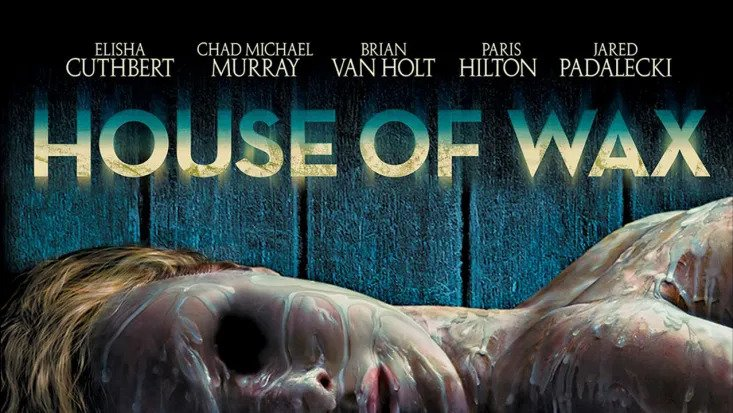

Um grupo de amigos da faculdade está a caminho de um jogo de futebol quando, em uma cidade fantasma, o carro quebra e são obrigados a procurar auxílio no único lugar que está aberto: o museu de cera local. Eles ficam impressionados com a perfeição das esculturas e logo percebem a razão de tanto realismo. Aterrorizados, fogem para não se transformarem em peças de museu.
